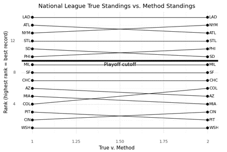
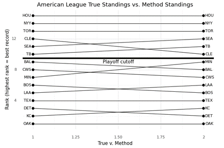
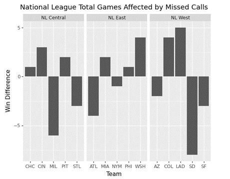
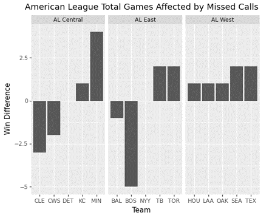

I had the privilege of attending the SABRmetrics conference in Phoenix, Arizona this past March. While It was nice enjoying the warm weather compared to Rexburg, Idaho it was inspiring to be around many others who share a similar love for analytics I learned much and got to speak to some great people. I was privileged to have my university (Brigham Young University - Idaho) pay for the trip which I attended with two professor and two other students. We, as students, agreed to present on something when we got back.
One Professor informed me of the Mathematical Association of America Conference in St. George, Utah as an option to do our presentation there. Agreeing it would be a great opportunity for use to present at a conference we decided to present down in St. George. From the SABRmetric conference we were inspired by the Diamond Dollars competition (https://sabr.org/analytics/case) focused on analyzing the impact of missed calls in a couple of games from the 2022 season, we wanted to shift our focus to the impact of missed calls over an entire season.
Our Abstract
In sports, teams often win or lose a game by the smallest of margins. In speaking of officiating, coaches frequently say that “Bad calls even out in the end.” Is this true for missed calls in Major League Baseball across an entire season? We take a look at the 2022 MLB season and use statcast data to model how poor officiating affects the expected runs per plate appearance. We discuss how an accumulation of missed calls affect season standings and playoff matchups.
MAA conference
The conference was small, well smaller in respect to the SABRmetric conference. I enjoyed listening to presentations and seeing some applications of data science and mathematics through them. Driving from Rexburg to St. George is an 8 hour trip and thankfully I got to split it up by stopping half-way near Salt Lake City to be with family. The 8 hour trip certainly gave me a lot of time to think, but it is a beautiful drive down though.
With the SABRmetric conference ending on March 12th and the abstract for the MAA conference due the 15th we had a quick turn around to decide on a project and a short timetable to finish the project as the MAA conference was on March 25th.
Methodology
We got our data from Statcast for the whole regular 2022 season. Our first step was to use a column in statcast labeled “zone” and identify missed calls. Numbers 1-9 are in the strike zone while 11-14 our outside (yes, they skipped the number 10). We set a threshold to only work with missed calls which happened when there was a plate appearance that affected the win probably of the game by .05 in the positive or negative direction. The column was only a measurement for the home team. For those at bats, we used the Run Expectancy 24, also n as RE24, (https://library.fangraphs.com/misc/re24/) values to determine the Run expectancy of the at bat. We used this run expectancy to analyze how the missed call affected the run expectancy of the at bat to measure the impact the Umpire had on potential runs scored thus, allowing us to see if the missed calls affected the final score in a way to reverse the outcome. RE24 is an Expected value for how the 24 difference situations based on how many runners are on base and the number of outs in the inning at the time of the at bat.
The Formula for RE24 is:
\[ \text{RE24} = \text{RE End State} - \text{RE Beginning State} + \text{Runs Scored} \]
This metric can be used to measure the performance of a pitcher or hitter by allowing us to capture the number of runs created (for a batter) or runs not created (for a pitcher). From the article, “Since Run expectancy tells you the number of expected runs, any number of runs created above or below that value can be treated as runs above or below average for the batter or pitcher depending on the outcome of each plate appearance.”
For example, take a given at bat where there are 0 runners on base and 0 outs. The Run expectancy is 0.461. Let’s say the player hits a home run. That player will be created for creating one run. As the end state of the plate appearance is same as the beginning.
\[ \text{RE24} = \text{0.461} - \text{0.461} + \text{1} = 1 \]
We wanted to avoid the butterfly affect by staying within the scope of that plate appearance that contained a missed call. As baseball is a discrete sport compared to a game like soccer which is continuous, there are many situations that can happen. With our short time we made the decision to avoid taking into account certain situations while leaving others out. This meant that we simply looked at how the umpires missed call changed the run expectancy at the end of the plate appearance.
We then take RE24 and adjust it to a game rather than an at bat. So the formula now looks like:
\[ \text{Game RE} = \text{True Final Score} - \text{Change in RE (adjusted at end of at bat)} + \text{RE at start of plate appearance} \] We sum up the changes in those per plate plate appearance in a game. By keeping the RE at the start of the plate appearance we allow ourselves to stay in the scope of the plate appearance to see how that missed call affected that plate appearance. One thing to notice is that we do not do an absolute value around the “Change in RE.” Consequently, if the change is a negative number it will result in a positive addition to the final score as two negatives will make a positive. This accurately gives back or takes away from the final score the appropriate number. If the change in run expectancy was positive due to the missed call then this should be taken away from the score.
More data wrangling was needed to ensure complete accuracy of numbers by properly identifying and differentiating from double headers of which my classmate was able to code up. I will not go into the details of how he did that, even though it would cool to look at, as this is to focus on the methodology.
We get the adjusted score for the home and away team and detect if a change was made. Summing up the results over a season we are able to get an adjusted season record and apply a rank to both the true record (the historical record) and the adjusted record enabling the creation of a slope chart to see the affect of missed calls on a teams record.
Findings
The results are very interesting.

We see that in the National League there is a lot shift. It shifts the seedings in the playoffs. Most noteworthy shift is Philly and San Diego. Philly made it all the way to the World Series where they eventually lost, but who knows how they would have done with a different path. Same holds for any team.

Here there is a bigger shift in the playoff with Cleveland falling from the fourth to the sixth seed. There is a lot more shifting in the bottom teams as well.
Any shift has significant impacts as teams draft orders will change and that has big impact on decision making and could be the difference between drafting a player who helps the franchise for years to come. Not to mention how it affects the player individually.
Conclusion
Our driving question was, “Does an umpires missed calls affect season’s standings or does it even out in the end?” From the visuals above we can conclude, it does have an affect.
Disclaimer
I do not have a strong option on Robo umpires calling balls and strikes. We recognize our methodology has flaws and can be improved upon.
More visuals

